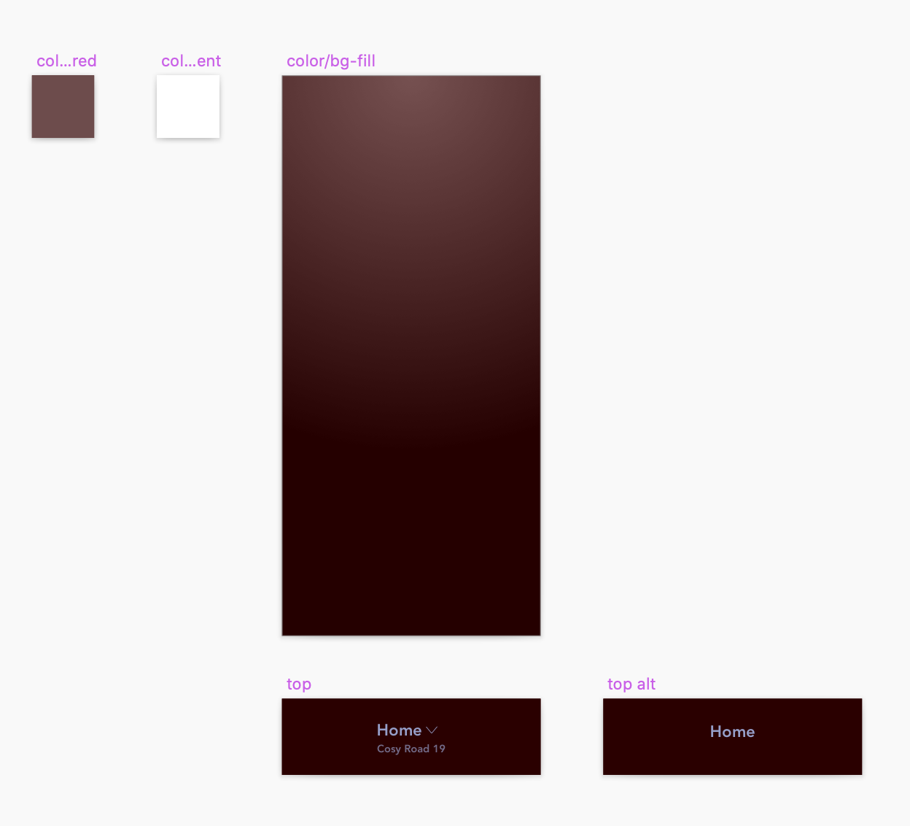
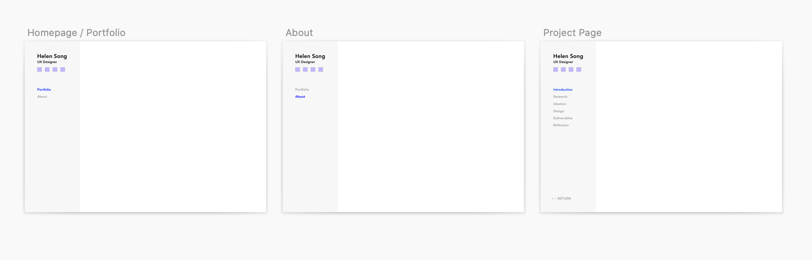
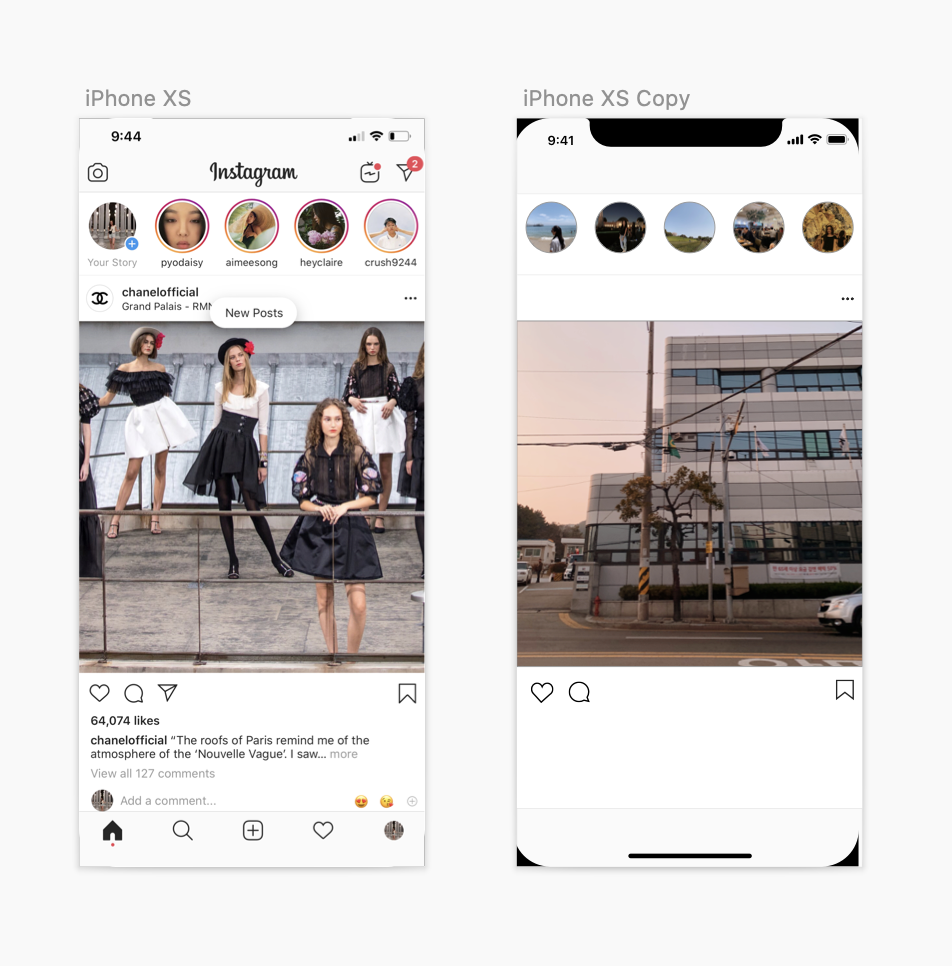

I’m interested in user experience design because of the impact it can have on the daily routines of people. Although some design changes to apps may seem extremely small, it definitely affects the overall experience of your day and your future plans. The daily frustrations users experience when using a product can also seem insignificant, but once experience designers alleviate their pain points, it’s great to see how much more efficiently people can go about their day. I would like to be an inclusive designer, thinking about not only the general population, but also those who may need to be catered to via accessibility solutions to digital product design. This is where my skills in user experience research come in, to ensure the quality experience of a product across the various personal backgrounds of users.
My design process includes rigorous research and uses a variety of methods and an iterative design process as well. The user always comes first in designing solutions that simplify and improve people’s lives. I am great at working with multidisciplinary teams to fully understand and bridge the gap between the technology, user, and business for a well rounded solution. Ultimately, experience design is a process in seeking to understand users and empathizing as we build our product.
  